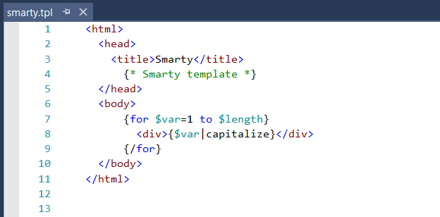

Smarty
Mi is a Smarty?
A Smarty egy sablonmotor a PHP számára. Úgy tervezték, hogy elválassza a megjelenítési réteget (HTML/CSS) az alkalmazási logikai rétegtől (PHP), lehetővé téve a webfejlesztők számára, hogy könnyedén építsenek komplex webes alkalmazásokat. A Smarty ezt a szétválasztást úgy éri el, hogy egyszerű és hatékony szintaxist biztosít a sablonok létrehozásához, amelyek könnyen integrálhatók a PHP kódba.
A Smarty-t először 2001-ben adta ki Monte Ohrt, és azóta a PHP-fejlesztők körében népszerűvé vált. Nyílt forráskódú szoftver, és ingyenesen letölthető a Smarty weboldaláról.
A Smarty néhány legfontosabb jellemzője a következő:

Sablon öröklődés: A Smarty lehetővé teszi olyan sablonok definiálását, amelyek más sablonokból öröklődnek. Ez nagyon hasznos lehet összetett webes alkalmazások építésénél, mivel lehetővé teszi a kód újrafelhasználását és a duplikációk elkerülését.
Sablonváltozók: A Smarty lehetővé teszi változók definiálását a sablonokon belül. Ezeket a változókat a PHP kódból lehet beállítani, majd a sablonokon belül használni.
Feltételes kijelentések: A Smarty egy sor feltételes utasítást biztosít, amelyekkel szabályozhatja a sablonok áramlását. Ezek közé tartoznak az if, else, elseif és switch utasítások.
Hurokszerű kijelentések: A Smarty egy sor cikluskezelő utasítást is biztosít, amelyek tömbök és más adatszerkezetek végigjárására használhatók. Ezek közé tartoznak a foreach, while és section utasítások.
Pluginok: A Smarty lehetővé teszi, hogy egyéni bővítményeket definiáljon, amelyeket a sablonjaiban használhat. Ezek a bővítmények összetett feladatok elvégzésére használhatók, például dinamikus tartalom generálására, adatok manipulálására vagy külső API-kkal való interakcióra.
A Smarty egyik legfontosabb jellemzője a szintaxis, amelyet úgy terveztek, hogy könnyen olvasható és írható legyen. A szintaxis egyszerű címkéken és függvényeken alapul, amelyekkel a sablonváltozókat lehet manipulálni és a sablon áramlását irányítani. Például a {if} címkét használhatja a tartalom feltételes megjelenítésére, vagy a {foreach} címkét a tömbökön való ciklusozásra.
A Smarty számos fejlett funkciót is tartalmaz, például a sablon öröklést és a gyorsítótárazást. A sablonöröklés lehetővé teszi egy alapsablon definiálását, amelyet gyermeksablonokkal bővíthet, megkönnyítve ezzel a közös elemek újrafelhasználását az alkalmazásban. A gyorsítótárazás lehetővé teszi, hogy a sablonok előre renderelt változatait a memóriában vagy a lemezen tárolja, csökkentve ezzel az egyes oldalak létrehozásához szükséges időt.
Összességében a Smarty fontos szerepet játszott a PHP webfejlesztés fejlődésében, és továbbra is népszerű választás azon fejlesztők számára, akik dinamikus, moduláris webes alkalmazásokat szeretnének létrehozni.